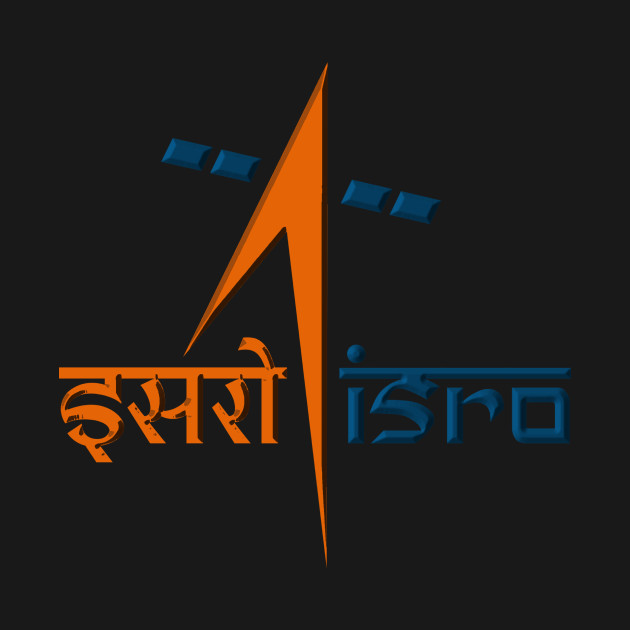

K.Sivan
The man who touched a billion hearts

The man who was looking at the moon while we slept.
A Timeline of Sivan's life
- Shri Hari Om Ashram Prerit Dr Vikram Sarabhai Research award (1999)
- ISRO merit award (2007)
- Dr Biren Roy Space Science award (2011)
- Distinguished Alumnus Award (2013) from Madras Institute of Technology Alumni Association, Chennai
- Distinguished Alumnus Award (2018) from Indian Institute of Science, Bangalore
- He was conferred Doctor of Science (Honoris Causa) from Sathyabama University, Chennai in April 2014
- Tamil Nadu government’s Dr. A.P.J. Abdul Kalam Award. (2019)
To read more about this fantastic man , check out his Wiki.